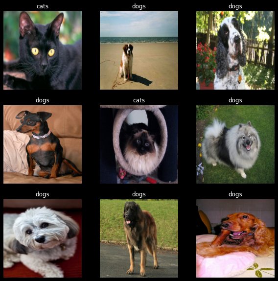
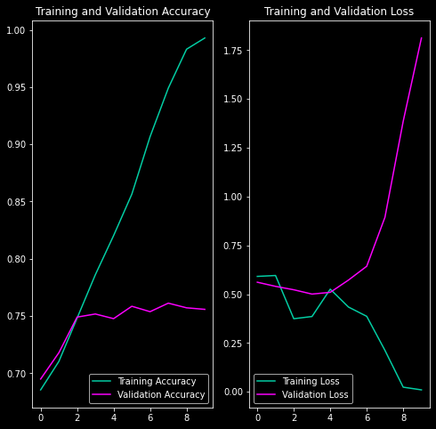

After previously having worked with TensorFlow, I had to switch to using pyTorch for all my deep learning work due to a project. So I replicated what I did previously in Binary Image Classification In Tensorflow using pyTorch.
I use the the "The Oxford-IIIT Pet Dataset" from https://www.robots.ox.ac.uk/~vgg/data/pets/.
Once downloaded the tarball contains a single folder called images, which contains both the cat and dog photos. In this particular dataset, the label of the image is in the filename. Particularly, the first letter of the filename is capital if the image were that of a cat (like Persian_80.jpg) and lowercase if its a dog photo (like keeshond_130.jpg).
So, once I extract the tarball, I move cats and dogs into their own subfolder. Once I do that the folder structure is as follows:
import torch
import numpy as np
import matplotlib.pyplot as plt
import seaborn as sns
import pathlib
import os
import torchvision
from torch.utils.data import DataLoader, random_split
from tqdm import tqdm
plt.style.use('dark_background')
print(f"{'Pytorch':<20}",torch.__version__)
if torch.cuda.is_available():
device='cuda'
print(f"{'Device':<20}", f"GPU ({torch.cuda.get_device_name(0)})")
torch.backends.cudnn.benchmark = True
else:
print("GPU is **not available**")
device='cpu'
print()
print("Looking for the dataset...")
data_dir = pathlib.Path('/home/addy/datasets/pets_photos/')
if data_dir.exists():
print("Found the 'pets_photos' dataset.")
else:
print("Downloading the 'pets_photos' dataset.")
dataset_url = "https://www.robots.ox.ac.uk/~vgg/data/pets/data/images.tar.gz"
# !wget {dataset_url} -P {data_dir.parent}
# !mkdir {data_dir}
# !tar xf {data_dir.parent / "images.tar.gz"} -C {data_dir}
# Move cats and dogs into their own subfolder so that the
# tf.keras.utils.image_dataset_from_directory function can pickup
# categories from the folder structure.
images_dir = data_dir / 'images'
cats_dir = data_dir / 'cats'
dogs_dir = data_dir / 'dogs'
cats_dir.mkdir()
dogs_dir.mkdir()
f = []
for (dirpath, dirnames, filenames) in os.walk(images_dir):
for file in filenames:
# The cats' image filenames start with an uppercase letter ¯\_(ツ)_/¯
if file[0].isupper():
os.rename(images_dir / file, cats_dir / file)
else:
os.rename(images_dir / file, dogs_dir / file)
# Finally delete the images folder. All photos should be under
# their proper categorical folder.
!rm -r {data_dir / 'images'}
Pytorch 1.10.2+cu102 Device GPU (NVIDIA GeForce GTX 1660 Ti) Looking for the dataset... Found the 'pets_photos' dataset.
# Initializing parameters
batch_size = 32 # Reduce this if you get memory errors
img_height = 160 # I'm keeping this at 160 for no particular reason
img_width = 160 # (there is a reason, I'll share in a future blog post)
seed = 120 # A random seed to get replicable results
epochs = 10 # The number of training epochs
Since the data now exists in appropriate folder structure, I can use the torchvision.datasets.ImageFolder to read them. Then I use torch.utils.data.random_split to divide the dataset into train and test sets.
transform_image = torchvision.transforms.Compose([
torchvision.transforms.Resize([img_height, img_width]),
torchvision.transforms.ToTensor()
])
transform_label = lambda x: torch.tensor(float(x)).unsqueeze(-1)
dataset = torchvision.datasets.ImageFolder(
data_dir,
transform=transform_image,
target_transform=transform_label
)
len_train = int(len(dataset) * 0.8)
len_test = len(dataset) - len_train
#using random_split from torch.utils.data
train_dataset, test_dataset = random_split(
dataset, [len_train, len_test],
generator=torch.Generator().manual_seed(seed) )
print("Images in the train set:",len(train_dataset))
print("Images in the test set:",len(test_dataset))
train_dataloader = DataLoader(
train_dataset,
batch_size=batch_size,
shuffle=True,
num_workers=12,
prefetch_factor=3)
test_dataloader = DataLoader(
test_dataset,
batch_size=batch_size,
num_workers=12,
prefetch_factor=3)
for X, y in test_dataloader:
print("Shape of X [N, C, H, W]: ", X.shape)
print("Shape of y [N, 1]:", y.shape)
break
Images in the train set: 5912 Images in the test set: 1478 Shape of X [N, C, H, W]: torch.Size([32, 3, 160, 160]) Shape of y [N, 1]: torch.Size([32, 1])
class_names = dataset.classes
class_names
['cats', 'dogs']
pyTorch reads img files into a tensor of shape [3, 160, 160]. However, matplotlib expects the shape to be in [160,160,3] and will throw the exception TypeError: Invalid shape (3, 160, 240) for image data if called directly.
for X, y in test_dataloader:
img = X[0]
break
img.shape, np.transpose(img.numpy(), (1, 2, 0)).shape
(torch.Size([3, 160, 160]), (160, 160, 3))
Calling np.transpose(img.numpy(), (1, 2, 0)) returns an array which fits the matplotlib expectation of an image.
I visualize a small number of items from the train dataloader to make sure that the images look as they should
class_names = list(train_dataset.dataset.class_to_idx.keys())
fig = plt.figure(figsize=(10, 10))
for images, labels in train_dataloader:
for i in range(9):
ax = plt.subplot(3, 3, i + 1)
img = np.transpose(images[i].numpy(), (1, 2, 0))
plt.imshow(img)
plt.title(class_names[int(labels[i].item())])
plt.axis("off")
break
plt.show()

We create a simple model consisting of:
import torch.nn as nn
import torch.nn.functional as F
class BinaryNet(nn.Module):
def __init__(self):
super().__init__()
self.conv1 = nn.Conv2d(3, 16, 3)
self.pool = nn.MaxPool2d(2, 2)
self.conv2 = nn.Conv2d(16, 32, 3)
self.conv3 = nn.Conv2d(32, 64, 3)
self.fc1 = nn.Linear(64 * 81 * 4, 128)
self.fc2 = nn.Linear(128, 1)
def forward(self, x):
x = self.pool(F.relu(self.conv1(x)))
x = self.pool(F.relu(self.conv2(x)))
x = self.pool(F.relu(self.conv3(x)))
x = torch.flatten(x, 1) # flatten all dimensions except batch
x = F.relu(self.fc1(x))
x = torch.sigmoid(self.fc2(x))
return x
def train_loop(dataloader, model, loss_fn, optimizer, history):
size = len(dataloader.dataset)
accuracy = 0
for batch, (X, y) in enumerate(dataloader):
X = X.to(device)
y = y.to(device)
#FORWARD PASS
pred = model(X)
loss = loss_fn(pred, y)
# Backpropagation
optimizer.zero_grad()
loss.backward()
optimizer.step()
loss = loss.item()
accuracy += (torch.round(pred) == y).type(torch.float).sum().item()
# if batch % 100 == 0:
# loss, current = loss.item(), batch * len(X)
# print(f"loss: {loss:>7f} [{current:>5d}/{size:>5d}]")
accuracy /= size
history['train_loss'].append(loss)
history['train_accuracy'].append(accuracy)
return loss, accuracy
def test_loop(dataloader, model, loss_fn, history):
size = len(dataloader.dataset)
num_batches = len(dataloader)
loss, accuracy = 0, 0
with torch.no_grad():
for X, y in dataloader:
X = X.to(device)
y = y.to(device)
pred = model(X)
loss += loss_fn(pred, y).item()
accuracy += (torch.round(pred) == y).type(torch.float).sum().item()
loss /= num_batches
accuracy /= size
history['test_loss'].append(loss)
history['test_accuracy'].append(accuracy)
return loss, accuracy
We train this model for 10 epochs with an Adam optimizer with default lr (1e-3) and a BCELoss (Binary Cross Entropy Loss).
model = BinaryNet().to(device)
loss_fn = nn.BCELoss()
optimizer = torch.optim.Adam(model.parameters())
epochs = 10
history = {
'train_loss':[],
'train_accuracy':[],
'test_loss':[],
'test_accuracy':[]
}
for t in tqdm(range(epochs), bar_format="{elapsed} Elapsed | {percentage:3.0f}% done |{bar}| {n_fmt}/{total_fmt} [{remaining} remaining | {rate_fmt}{postfix}]", unit="epoch", total=epochs):
train_loop(train_dataloader, model, loss_fn, optimizer, history)
test_loop(test_dataloader, model, loss_fn, history)
01:04 Elapsed | 100% done |██████████| 10/10 [00:00 remaining | 6.49s/epoch]
Finally, we visualize the training and validation accuracy and loss.
epochs_range = range(epochs)
plt.figure(figsize=(8, 8))
plt.subplot(1, 2, 1)
plt.plot(epochs_range, history['train_accuracy'], label='Training Accuracy', color='#03CEA4')
plt.plot(epochs_range, history['test_accuracy'], label='Validation Accuracy', color='#fc00ff')
plt.legend(loc='lower right')
plt.title('Training and Validation Accuracy')
plt.subplot(1, 2, 2)
plt.plot(epochs_range, history['train_loss'], label='Training Loss', color='#03CEA4')
plt.plot(epochs_range, history['test_loss'], label='Validation Loss', color='#fc00ff')
plt.legend(loc='lower left')
plt.title('Training and Validation Loss')
plt.show()

The validation loss increases after the 5th epoch or so. This is because the model is over-fitting to the training data.